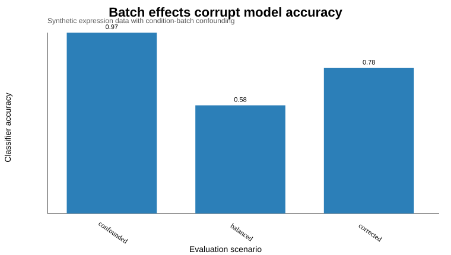

Bench to Bytes portfolio analysis report. Uses only public or synthetic data.
If condition and batch are confounded, a model can appear accurate while learning technical artifacts instead of biology.
Synthetic expression data generated to illustrate a common ML failure mode in biology: treatment labels are partially confounded with batch metadata.
docs/ml_ready_data_playbook.mdtemplates/ml_project_checklist.mdoutputs/batch_effect_demo.csvfigures/batch_effect_accuracy.svgThe accuracy drop under balanced validation is the key lesson: biological ML portfolios should show data strategy, not just model training.
